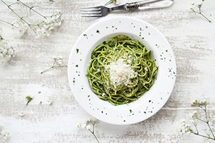
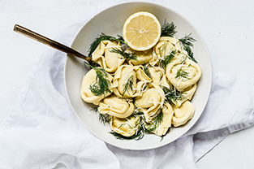

Raspberry & Cream Frozen Yogurt Pie
35mins | 7 14

Giant Ice Cream Sandwich
35mins | 7 14

Dark Chocolate Crunch Ice Cream
Sandwich Cake
35mins | 7 14
Raspberry & Cream Frozen Yogurt Pie
35mins | 7 14